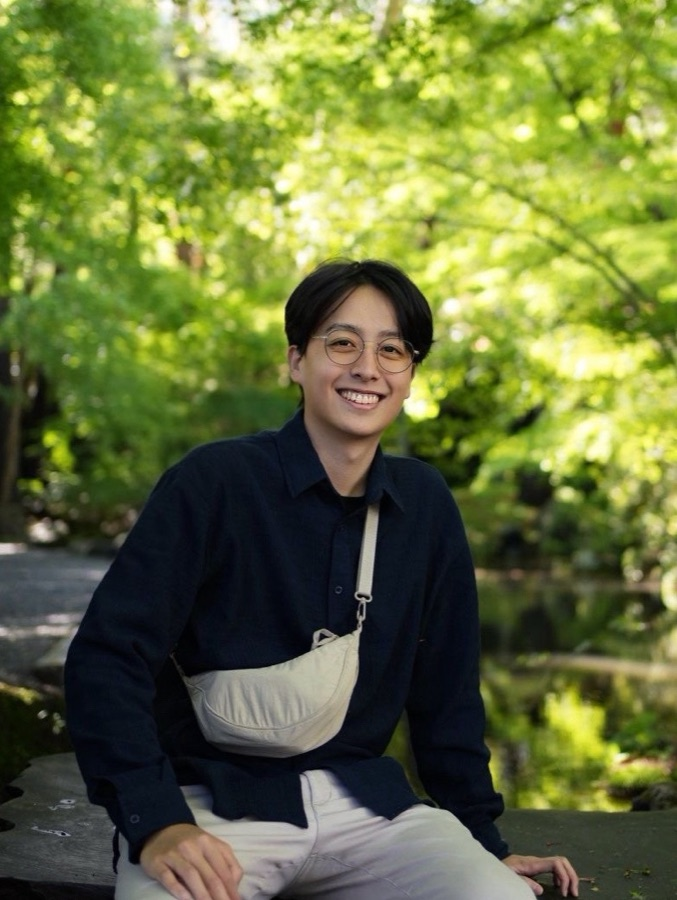

3D Perception & Data Pipelines
Cheng-Ning (Anderlin) Huang
Focuses on 3D perception and computer-vision data pipelines, with experience in Gaussian Splatting, ROS-based autonomy, and production mapping systems.
Background
National Tsing Hua University | B.S. in Electrical Engineering and Computer Science
Top Technical Strengths
- 3D Computer Vision
- Multi-View 3D Reconstruction
- Large-Scale Data Pipelines
- PyTorch
- HuggingFace
- Software Engineering
View relevant experience
- Microsoft Bing Maps — Debugged and optimized production geocoding pipelines for large-scale mapping systems
- NTHU CV Lab — Developed Gaussian Splatting methods for 3D reconstruction in reflective scenes